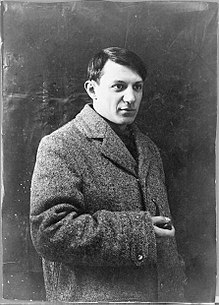

Pablo Ruiz Picasso was a Spanish painter, sculptor, printmaker, ceramicist and theatre designer who spent most of his adult life in France. Regarded as one of the most influential artists of the 20th century, he is known for co-founding the Cubist movement, the invention of constructed sculpture,[5][6] the co-invention of collage, and for the wide variety of styles that he helped develop and explore. Among his most famous works are the proto-Cubist Les Demoiselles d'Avignon (1907), and Guernica (1937), a dramatic portrayal of the bombing of Guernica by German and Italian airforces during the Spanish Civil War.
Picasso demonstrated extraordinary artistic talent in his early years, painting in a naturalistic manner through his childhood and adolescence. During the first decade of the 20th century, his style changed as he experimented with different theories, techniques, and ideas. After 1906, the Fauvist work of the slightly older artist Henri Matisse motivated Picasso to explore more radical styles, beginning a fruitful rivalry between the two artists, who subsequently were often paired by critics as the leaders of modern art.
Picasso's work is often categorized into periods. While the names of many of his later periods are debated, the most commonly accepted periods in his work are the Blue Period (1901–1904), the Rose Period (1904–1906), the African-influenced Period (1907–1909), Analytic Cubism (1909–1912), and Synthetic Cubism (1912–1919), also referred to as the Crystal period. Much of Picasso's work of the late 1910s and early 1920s is in a neoclassical style, and his work in the mid-1920s often has characteristics of Surrealism. His later work often combines elements of his earlier styles.